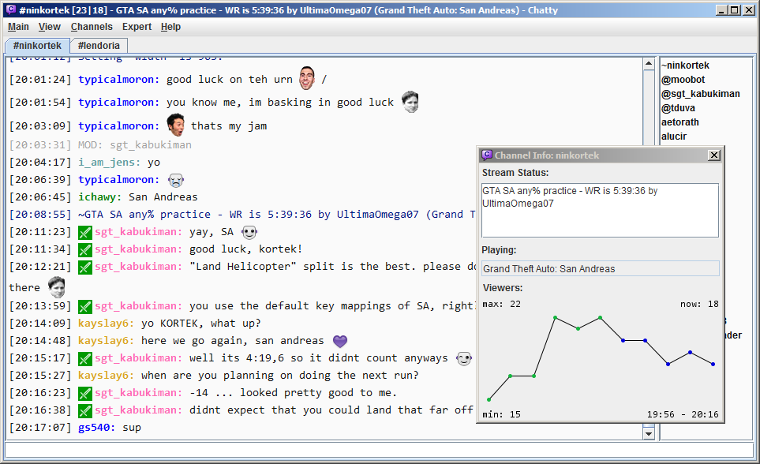
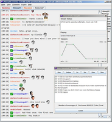
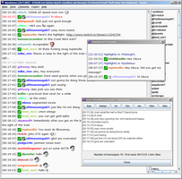
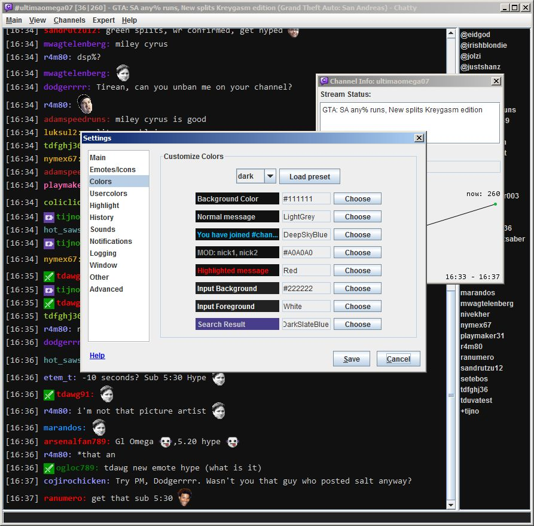

Chatty
Chatty
Chatty is a Twitch chat client for everyone who wants to try something new and different from the webchat, but doesn't want the complexity of an IRC client or miss out on the Twitch specific features.
Features
- Twitch specific features
- Nick colors, emoticons, user icons (mod, sub, turbo, ..), showing bans, stream status and viewercount display and stats
- Click on nick in chat to open dialog with moderation buttons, showing the last messages of this user (no banning the wrong user)
- Change title/game of your stream and run commercials
- Get notified when channels you follow go live and view a list of live streams
- Easily open streams in your browser, or run Livestreamer out of Chatty
- Optional compact way of showing mod/unmod/joins/parts messages
- View a list with the most recent followers/subscribers of your channel
- With FrankerFaceZ-Support (Emoticons & Custom Mod Icons) and BetterTTV emotes, including unified bot badge(new!)
- Dialog with your paid emotes, channel-specific emotes, all global emotes(new!) and Twitch emotes you favorited
- Connect with OAuth (your Twitch account password is never entered in the application)
- Let Chatty help making Stream Highlights by adding the current stream time to a file (including optionally your moderators)
- General features
- Hopefully easy to use.. ;)
- Chatlog, clickable links, improved TAB Completion (nicks, emotes, commands, custom) (new!), input history
- Message Highlighting, Message Ignore System, Channel Favorites/History
- Join several channels, popout individual channels to view them side-by-side
- Desktop application (some might prefer this over an application running in a browser)
- SpeedRunsLive Race Viewer
- Customization
- Choose your font, customize colors, timestamp, how bans are shown, joins/parts and more
- Customize usercolors based on user-type (mod, sub, turbo..), specific usernames or colors (replace colors)
- Customize usericons (badges), replace default ones or add your own for specific users
- Disable specific emotes, replace emotes with your own locally, change scaling all emotes in chat or the Emote Dialog (new!)
- Create custom commands and add them to context menus or the user dialog
- Add or remove regular, app-wide or global hotkeys according to your needs
- Extensive settings dialog to adjust the features to your needs
Kind of old screenshots because I'm lazy.
   {kind=link}
{kind=link}
{kind=link}

Requirements
You need to have the Java 7 JRE or later installed. Download Java if you need it.
Download & Getting started
- Download Version 0.8 [Mirror] (Recommended version if you don't need global hotkeys or don't use Windows)
- With global hotkey support (Windows only):
Extract the .zip into a folder of your choice and start Chatty.jar.
When you start Chatty the Connect Dialog should come up. Click Create login.. and Request login data and follow the instructions to authorize Chatty to connect to chat for you. There is also a short
Getting Started Guide.
There is some help available (you can find the same in the program itself). There is also a changelog.
You can use this banner if you like Chatty and want to promote it. Just link to http://chatty.github.io please. :)
{kind=link}
Feedback (Feature requests, Bug reports)
This is my first slightly bigger program, so go easy on me. ;) But if you find any bugs or have any other feedback, feel free to tell me. You can message me on Twitch, write me an e-mail or use Twitter.
Please tell me about bugs or else I can't fix them. Please describe exactly what happened and how it happened, since this is absolutely necessary to find out what went wrong (just saying "it doesn't work" or "it won't load" can mean a lot of things). You should also copy the debug.log file in your settings directory (type /openDir to open it, or /dir if that doesn't work) before it is overwritten, in case it could be helpful to find the bug.
Known issues
- Sometimes users aren't correctly sorted in the userlist
- Windows: Dragging the upper edge to maximize the window vertically doesn't resize the contents of the window. This may be a Java Bug that I cannot fix. Workaround: Try double-clicking the upper edge instead of dragging it.
FAQ (Frequently Asked Questions)
- Is Chatty more reliable when Chat is breaking?
- Not really. Chatty uses the same Chat Servers as any other Twitch Chat Client (Default Webchat, IRC Clients), so it is affected in the same way when messages get lost. It's possible however that some servers/ports are not as affected as others, so there can be differences.
- What are the advantages of Chatty then?
- Chatty provides a different way of using Twitch Chat and has a lot of features you may find useful.
- Does Chatty support Twitch Group Chat?
- No. However, you can manually connect to Group Chat by changing the server/port to connect to (you can change it in the Settings under Advanced, use the 'server' and 'port' settings, the /server command or commandline parameters) and looking up the channel name yourself (you can use this blogpost for help on that). There are a few drawbacks: Since Chatty can currently only connect to one server at a time, you would have to run more than one instance if you want to use regular Twitch Chat at the same time. Use this guide in the help for more information. It also wouldn't recognize the channel as a group chat channel, so some stuff might not work correctly.
- Is Group Chat support planned?
- No.
- Does Chatty support other streaming services like hitbox.tv?
- Unfortunately not. And adding support wouldn't be a trivial task either, since Chatty is designed around Twitch and adding other services would require a lot of changes.
- Why does Chatty randomly say UNMOD/MOD, even though the user never left/was never actually unmodded?
- Twitch Chat just sometimes does that and seemingly unmods/mods people (sometimes just one person, sometimes more, but they still have mod power, it just doesn't show) and Chatty simply displays that. If you are bothered by this, then you can just disable MOD/UNMOD messages in the
Settings - Messagesaltogether. - Why does Chatty report "Stream offline", even though the stream clearly didn't go offline?
- Sometimes the Twitch API will return a stream as offline, even though it isn't. Chatty checks the API twice before reporting a stream as offline, but if both checks return false data, then a false offline report will happen.
- Why does the userlist only contain users that send a message?
- Check what Twitch Client Version you have set under
Settings - Advanced. Learn more about what that does in the Settings Help. Otherwise this may just be Twitch not sending the userlist, which can sometimes happen (especially on larger channels). - Why do I see much less messages in Chatty compared to webchat?
- If you receive fewer/not the same messages on a particular channel compared to webchat, then webchat is probably using the Event Chat servers for that channel. They are a seperate group from servers than the normal ones you get when connecting to
irc.twitch.tv. See: Join Eventchat. - Is there any help/documentation?
- Yes.